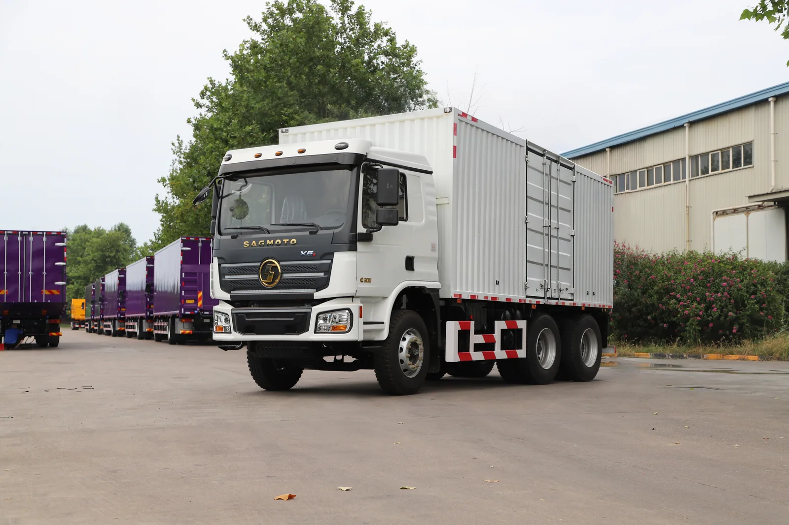
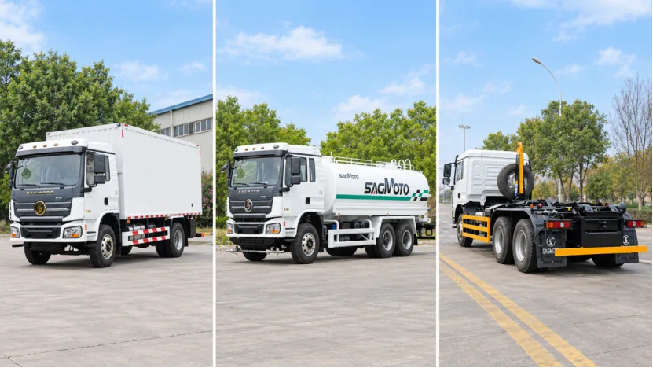

A closed cargo body can protect suitable goods from weather and open exposure, but the body should be sized around the freight and the route. The SAGMOTO X5 platform material shows an X5s 6x4 box-cargo application and describes multiple wheelbase options across the platform. Exact dimensions and ratings must be confirmed for the specific vehicle.
Measure real cargo, not an idealized load
Collect dimensions and mass for the common packages, pallets or equipment that will be carried. Note how items are stacked, whether they need securing points, and what share of trips are partially loaded. A body that is larger than the routine cargo may add mass and make access harder without improving useful fleet capacity.
Decide whether loading is from the rear, side or both. Door size and placement, internal clearance, floor arrangement, tie-down points and forklift access are practical specification items. If goods need airflow or temperature control, state that up front; a standard enclosed body should not be treated as refrigerated equipment.
Check route clearance and maneuverability
Share the tightest loading yards, turning areas, overhead restrictions and road segments. The body length and chassis wheelbase affect turning and approach angles; the body height may determine access to depots, canopies or urban roads. Review actual route dimensions rather than using only a highway description.
Increasing body size can also change mass and axle distribution. The final vehicle must be checked against its chassis configuration and the applicable destination limits. A box's internal volume is not a payload figure.
Choose protection features by freight
For rain-sensitive cargo, discuss roof and door sealing, drainage and inspection access. For goods that need frequent side loading, a closed box with only rear access may slow operations; a side-opening or curtain-sided solution may fit better, depending on the cargo and route. For fragile or high-value freight, provide securing and partition requirements instead of assuming they are included.
RFQ information that speeds up a useful proposal
- Typical cargo dimensions, mass and packaging
- Loading method, equipment and required door access
- Body internal dimensions target and protection needs
- Typical and maximum trip distance and daily cycles
- Turning, height and road-surface constraints
- Destination, steering side, emissions and known legal mass limits
- Required inspection records and body-builder interface drawing

FAQ
Is a longer body always more productive?
No. Compare usable cargo fit against turning, clearance, mass and axle distribution on the actual route.
Does an enclosed body make a truck refrigerated?
No. Temperature-controlled transport needs purpose-designed insulation and refrigeration equipment, which is a separate specification.
Can the pictured truck's body measurements be assumed?
No. Request the body drawing and completed-vehicle data for the offered configuration.
Plan an X5s cargo configuration
Share cargo dimensions, access requirements and route constraints for a body and chassis review.
Submit requirements · WhatsApp +86 185 9197 6330 · X5 platform overview